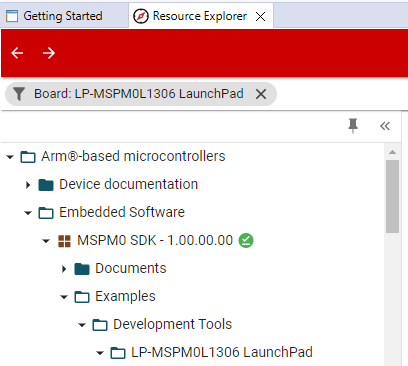
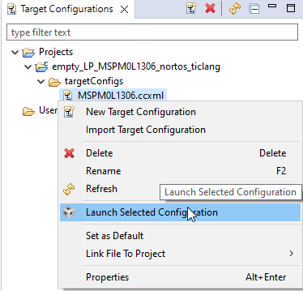
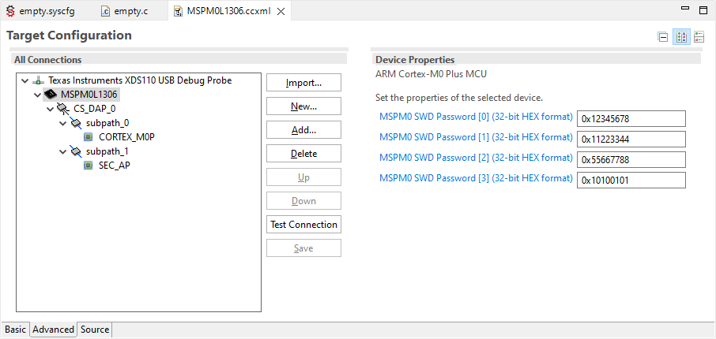

适用于 MSPM0 MCU 的 Code Composer Studio IDE 版本12.7.0+¶
目录¶
请先阅读¶
如何使用本指南¶
本指南仅介绍了软件开发环境的设置和基本操作、并未全面描述 MSPM0微控制器或完整的开发软件和硬件系统， 有关这些项目的详细信息、请参阅下面章节中列出的相应 TI 和 CCS 文档 Related Documentation From Texas Instruments。
有关注意事项的信息¶
本指南可能包含注意事项。
小心 - 这是一个警告声明的例子。 警告声明描述了可能损坏软件或设备的情况。
仔细阅读每条注意事项。
德州仪器(TI)的相关文档¶
MSPM0开发工具文档：
MSPM0器件文档：
Code Composer 文档：
如果您需要帮助¶
Code Composer Studio (CCS) IDE 可从 [TI.com](https://www.ti.com/tool/CCSTUDIO] 获取。 CCS 12.3的安装说明可在 此处 获取。
TI Arm Clang 是 CCS 的推荐编译器 在安装过程中选择 MSPM0时、默认会安装该程序。
ARM GCC 也可在 CCS 内部使用；但是、默认情况下不会安装。 安装 Arm GCC 一节介绍了如何安装适用于 CCS 的 GCC。
1. 软件安装¶
Code Composer Studio IDE 可从 TI.com 获取。
MSPM0微控制器和 MSPM0 SDK 需要 CCS 12.3或更高版本。
注 此版本包括对 MSPM0量产型号的支持，不支持早期的型号。
请参阅 MSPM0 SDK 文档、查找适合您的 IDE 版本的 SDK。
2. 开发流程¶
本章介绍了如何使用 CCS 来运行演示程序和开发应用软件。
2.1 概览¶
Code Composer Studio (CCS)是一种集成开发环境(IDE)，支持 TI 的微控制器和嵌入式处理器产品系列。 CCS 包含一整套用于开发和调试嵌入式应用的工具。
本指南仅介绍了使用 MSPM0的 CCS IDE 的一些特性和功能。
有关 CCS 的更多文档、请访问 TI.com 或 IDE 中包含的”帮助”菜单。
2.2 从头开始创建项目¶
注：不建议 从头开始创建项目，因为从头开始创建项目并不能添加所有必需的项目 默认情况下为器件支持文件。 要从空白项目开始、TI 建议导入空 Driverlib 示例 SDK 中的项目。
2.3 在 CCS 中使用 TI Resource Explorer¶
TI Resource Explorer (TI-Rex)可帮助您查找适用于所选平台的所有最新示例、库、演示应用、数据手册等。
此工具可从 https://dev.ti.com/tirex 获取、但它也集成到 CCS 中、从而实现更集成的用户体验。
选择 Help → Getting Started。

单击 Resource Explorer
导航面板可用于查看不同的 TI 产品、文档、软件等
TI Resource Explorer 还允许通过单击产品旁边的并选择 Manage Versions 来选择特定的 SDK 版本。 请注意、已安装的产品也会显示绿色复选标记。
 使用集成的搜索功能按 LaunchPad (例如 LP-MSPM0L)器件(例如 MSPM0L)、中间件(例如 DriverLib)或解决方案(例如LIN)进行筛选。 请注意、TI-Rex 将自动检测连接的 LaunchPad。

选择一个示例将显示一个自述文件，其中包含该示例的说明、外设和引脚用法以及如何运行该示例。

为示例选择一个 CCS 工程，然后点击 Import 将其添加到您的工作区中。

请注意、CCS 将自动检测相关的安装包、包括 SDK 和编译器、 如果需要、它将请求安装。
2.4 将 SysConfig 与 CCS 结合使用¶
MSPM0 SDK 中的一些示例支持 SysConfig 功能。SysConfig 是一个直观而全面的图形实用程序集合、用于配置引脚、外设、子系统等 组件。 SysConfig 可帮助您直观地管理、暴露和解决配置冲突、以便您有更多时间去处理 创建差异化的应用程序。
SysConfig 工具作为独立安装程序提供、可在 dev.ti.com 的云上使用、也可集成到 CCS 中以获得更好、更轻松的体验。
在 CCS 中导入 MSPM0项目后、只需双击 .syscfg 文件、即可打开 SysConfig。

有关将 SysConfig 与 MSPM0一起使用的更多信息、请访问 Using SysConfig with MSPM0 指南。
2.5 在 MSPM0衍生产品之间迁移¶
SysConfig 允许在 MSPM0衍生产品之间更轻松地进行移植；但需要进行一些手动修改。 以下步骤适用于 TI Arm Clang、但类似的步骤适用于 Arm GCC。
在 SysConfig 中，启用设备视图并单击 SWITCH
为新的 MSPM0设备选择相应的选项，然后单击 CONFIRM。
请注意、SysConfig 将突出显示与迁移发生的任何冲突、例如不可用的引脚和外设。 根据需要修复任何冲突。
CCS 将自动移植器件并添加相应的.ccxml 文件。
在项目属性中，选择 Build → Arm Compiler → Predefined Symbols。 选择器件定义并更新它。
更新链接器和启动文件。 MSPM0 SDK 包含所有 MSPM0衍生产品的默认文件、分别位于
<sdk>\source\ti\devices\msp\m0p\linker_files\ticlang和<sdk>\source\ti\devices\msp\m0p\startup_system_files\ticlang。
请注意、应从工程中排除或删除以前的文件。
解决所有其他问题项，例如不兼容的库和源代码。
注意：不使用 SysConfig 时、步骤1-3不适用、需要手动完成步骤4。
2.6 堆栈管理和链接器文件¶
保留的堆栈和堆大小可使用项目设置或在链接器文件中进行配置。
2.6.1 使用 TI Arm Clang 编译器配置堆栈¶
右键单击某个项目，然后选择 Properties。 选择 Build → Arm Linker → Basic Options 并相应地设置堆栈。
也可以通过添加或编辑 --stack_size=xx 或 -heap_size=xx 直接在链接器.cmd 文件上修改堆栈。
2.6.2 使用 Arm GCC 配置堆栈¶
通过添加或编辑 _Min_Heap_Size = xx 或 _Min_Stack_Size = xx、可以直接在链接器.lds 文件上修改堆栈。
2.7 如何生成 TI .TXT (和其他格式)文件¶
CCS 包含可用于以多个方式生成输出对象的实用程序 与 [MSP-GANG]等编程工具配合使用的格式(https://www.ti.com/tool/MSP-GANG) 和 UniFlash。
2.7.1 使用 Arm Hex 实用程序¶
以下步骤说明了如何使用CCS 内置的HEX 工具生成 TI TXT 格式。
右键单击一个项目，然后选择 Properties。 选择 Build → Arm Hex Utility 并选择 Enable Arm Hex Utility。

选择 Output Format Options。 然后选择 TI-TXT hex (–ti_txt) 选项。
同样的过程可用于生成其他格式；但是、某些格式可能需要其他参数。
一种常见的是intel十六进制格式，除选择输出格式 Intel hex (–intel, -i) 外，还需要指定使用该格式 的存储器和 ROM 宽度。
当对 MSPM0使用 Intel hex 时，请在 Build → Arm Hex Utility → General Options 中选择8的内存和 ROM 宽度。

如需更多信息、请访问 Hex utility in CCS。
2.7.2 使用 objcopy 实用程序¶
CCS 包括 Arm objcopy 实用程序、这是一个基于 LLVM 的工具、可用于 生成多种格式的二进制文件。
以下步骤说明了如何使用 objcopy 启用 Intel Hex 格式。
右键单击一个项目，然后选择属性。 选择构建→** Arm objcopy 实用程序并选择启用 Arm objcopy 实用程序**。

使用.hex 扩展名指定输出文件名。
有关 objcopy 的更多信息、请访问此 objcopy guide。
2.8 覆盖预编译库¶
项目可能包括预编译的库、可简化开发和编译时间；但是、 它们不允许开发人员轻易修改源代码。
此类库的一个示例是 MSPM0 DriverLib、如下所示。
覆盖库的一个选项是只需将任何或所有源文件添加到工程中。 MSPM0 SDK 包括 empty_driverlib_src 示例、其中包括所有 DriverLib 源 默认情况下：
有关的信息、请参阅 调试预编译库 如何调试预编译库。
2.9 从 SRAM 运行¶
MSPM0-SDK 中包含的示例通常包含链接器文件 创建可从内部闪存运行的应用程序，这些应用程序 在器件复位或下电上电后执行。 但是，在某些情况下、也可以从 SRAM 下载和执行代码。
本节介绍了如何在 SRAM 上执行完整应用程序的步骤。
2.9.1 从 SRAM 运行完整的应用程序¶
以下步骤显示了如何修改基本 GPIO_TOGGLE_OUTPUT 示例从而支持在 LP_MSPM0L1306上从 SRAM 运行程序。 类似的步骤适用于其他示例和器件。
打开链接器.cmd 文件并将其修改为使用 SRAM、如下所示：

禁用 CCS 中默认执行的系统复位。
CCS 包含在器件上执行某些函数的.gel 文件。 这些 文件包含在 CCS 安装文件夹中、位于
<ccs>\ccs_base\emulation\gel>。 下面的屏幕截图 显示了 MSPM0L1306所需的修改：

下载代码并注意该器件将从 SRAM 执行。

2.9.2 从 SRAM 运行函数¶
以下步骤显示了如何声明从 SRAM 执行的函数。
将函数移动到
.TI.ramfunc段。 这可以通过实现 使用属性声明函数__attribute__((section(".TI.ramfunc")))__attribute__((noinline))如下所示：
链接器文件应包含
.TI.ramfunc的位置。 请注意链接器 MSPM0-SDK 中包含的文件已包含此位置、但仅包含此位置在.TI.ramfunc 中放置了任何函数、则适用。
下载代码并注意设备将从 SRAM 执行该功能。

3. 调试应用程序¶
以下调试器已通过 Code Composer Studio IDE 成功测试。
TI XDS 工具、包括集成到 MSPM0 LaunchPad 中的 XDS-110。
Segger J-Link 仿真器
3.1 使用 TI XDS 工具¶
TI 为基于 Arm 的器件提供了一系列调试器、包括与 MSPM0 LaunchPad 集成的 XDS-110。
要使用 TI-XDS 调试器，请打开项目选项，单击 General → Connection Texas Instruments XDS110 USB Debug Probe。
3.1.1 闪存加载程序¶
闪存加载程序设置允许在对器件进行写入和擦除时配置一些设置。
要查看和修改这些设置，请打开项目属性并选择 Debug → Category:MSPM0 Flash Settings。

闪存加载程序具有以下选项：
Reset Configuration：允许在写入前后执行软或硬复位。
Program Configuration：在写入时启用/禁用 CRC 校验。 请注意、无论此设置如何、在写入/擦除非 MAIN 时都会执行非 MAIN 的 CRC 验证。
Erase Configuration: 配置当擦除flash的时候要执行哪些操作. 可选项如下:
Erase MAIN memory only: 只擦除MAIN memory.如果尝试写NONMAIN会产生一个错误信息。
Erase MAIN and NONMAIN memory: MAIN 和 NONMAIN memory 都会被擦除， 想了解有关NONMAIN的更多信息请参考 Erasing and Updating NONMAIN Memory。
Erase MAIN and NONMAIN necessary sectors only: 只擦除将要被更新的扇区，包含MAIN和NONMAIN区域。关于flash扇区的大小请参考具体器件的数据手册, 想了解有关NONMAIN的更多信息请参考 Erasing and Updating NONMAIN Memory.
Erase MAIN memory sectors by range: 只擦除 Sector Erase Start Address 和 Sector Erase End Address 之间的扇区。关于Memory扇区大小和地址信息请参考相关数据手册。 比如说，在每个扇区为1KB大小的 MSPM0 器件上设置起始地址 0x0000_0100 到结束地址0x0000_0400 的区域，将会擦除扇区0x0000_0000-0x0000_03FF 和 0x0000_0400-0x0000_07FF。 请注意，只有MAIN memory 会被擦除，如果试图写NONMAIN会产生一个错误信息。
Do not erase Flash memory: 不擦除Flash。如果不擦除就尝试写NONMAIN会产生一个错误信息。
Advanced Configuration：禁用验证设备 ID。 用于调试目的、不建议禁用。
Enable Verbose Output：在运行 Flash 加载程序时显示调试信息。
3.1.2 擦除和更新NONMAIN Memory¶
注意：擦除和写入NONMAIN 时应格外小心。 如果操作不正确，器件将被 锁定在永久不可恢复的状态。
NONMAIN 是flash memory里的一块特定区域，用来存储器件启动后的操作相关配置数据。NONMAIN 不应该被用作他用. 更多信息请参考器件的技术参考手册。
当需要配置NONMAIN时，TI 建议使用SysConfig中的NONMAIN configurator.更多信息请参考 Using SysConfig with MSPM0。
如Flash Loader 章节中所描述, NONMAIN 是通过选择擦除配置中的 Erase MAIN and NON-MAIN memory 或者 Erase MAIN and NONMAIN necessary sectors only 进行擦除。
请注意如果其中一个选项使能了， Flash Loader将会擦除NONMAIN; 并且当写入完成，器件会运行一个CRC校验，如果发现NONMAIN 内容校验失败，将会尝试恢复成默认值。
3.2 使用 Segger J-Link¶
要使用 Segger J-Link 调试器，请打开项目选项，单击 General → Connection 然后选择 SEGGER J-Link Emulator。
注意：可能需要更新 Segger 驱动程序。 按照有关如何在 CCS 中使用 J-Link 的说明 此处。
3.3 断点类型¶
CCS 调试器使用有限数量的片上调试资源(特别是4个硬件断点和2个硬件观察点)。 MSPM0不支持闪存中的软件断点。 这意味着 CCS 内最多可以设置4个硬件断点。
CCS 可以使用断点在 main 停止或在 exit 停止器件。 通过选择 Debug → Program/Memory Load Options，可以在项目属性中更新这些设置。
如果设置了最大断点数、将显示以下警告。
3.4 调试预编译库¶
工程可能包含预编译的库、如果符号不可用、则很难进行调试。 此类库的一个示例是 MSPM0 DriverLib、许多 MSPM0 SDK 示例使用该函数。 可以通过将源代码添加到查找路径来解决此问题。
在项目属性中，选择 Debug → Source Lookup Path，然后添加的源路径 预编译库。

有关的信息、请参阅 覆盖预编译库 如何覆盖和修改库中的源代码。
3.5 DSSM 指令¶
MSPM0 支持通过调试器的SWD口， 使用Debug Subsystem Mailbox(DSSM)和设备通讯。 这些指令在 SWD 安全等级2中不可用，但它们可以选择在安全级别 0 和 1 中使用。请参阅设备技术参考手册，了解有关安全策略和 DSSM 的更多信息。
MSPM0 CCS 支持包中支持包括 GEL 文件，不仅可以执行芯片初始化，也可以发送DSSM指令，请参考以下章节。
有关 CCS 中 GEL 指令的更多信息，请访问 CCS 在线文档。
3.5.1 DSSM Mass Erase, Factory Reset, Wait for Debug, and Set Reset Mode批量擦除，出厂重置，等待调试和设置重置模式¶
DSSM Mass Erase批量擦除： DSSM Mass Erase仅擦除 MAIN 闪存区域，这通常包括用户应用程序。 NONMAIN 闪存区域不受Mass Erase 影响。 批量擦除可用于擦除所有应用程序代码和数据同时保持设备配置本身完好无损。
DSSM Factory Reset恢复出厂设置： DSSM 恢复出厂是擦除 MAIN 和NONMAIN闪存区域，然后进行重置 NONMAIN 闪存区域的默认值。 这样的擦除是用于想要完全重置 NONMAIN 的应用需求，同时擦除应用程序代码和数据。
DSSM Wait for Debug等待调试: DSSM等待调试会使设备处于停止状态重置处理程序，直到用户运行应用程序或对电路板执行下电上电操作。此命令非常有用，因为它允许停止先前刷新的应用程序并强制在重置处理程序中等待。 这样做可以更好地调试会话允许用户查看在点击main()之前发生的情况。
DSSM Set Reset Mode设置重置模式: 复位时设置的DSSM会使设备处于复位状态，从而停止先前的应用程序运行。 该命令将解除应用程序的控制权序允许在下载新的应用程序。
Note: DSSM等待调试和设置重置模式在使用中略有不同。 Wait for Debug命令的主要用途是将设备置于已存在应用程序的重置处理程序中。 这样做可以为用户提供更好的调试体验，因为这允许用户在点击当前应用程序中的main()之前查看正在发生的情况。 设置重置命令的主要目的是在重置状态(而不是重置处理程序)中停止设备，用户可以在该状态下将新项目刷新到设备，而不管先前存在的应用程序中是否存在任何错误。 此命令不用于调试。
要执行DSSM批量擦除，DSSM出厂重置，DSSM等待调试或DSSM设置重置模式，请执行以下步骤:
在 CCS 菜单上，选择 View → Target Configurations。
在 Target Configurations 窗口中，右键单击活动的 .ccxml 项目并选择 Launch Selected Configuration。
 在调试器窗口菜单上，选择 Scripts → MSPM0xxxx_Commands （其中 MSPM0xxxx 取决于当前的 MSPM0 设备），然后选择其中一个 以下选项：
MSPM0_MailboxMassErase_Manual：将执行批量擦除 要求用户按下复位按钮。
MSPM0_MailboxMassErase_Auto：将执行批量擦除 使用 XDS110 复位线强制复位。
MSPM0_MailboxFactoryReset_Manual：将执行出厂重置 要求用户按下复位按钮。
MSPM0_MailboxFactoryReset_Auto：将执行出厂重置 使用 XDS110 复位线强制复位。
MSPM0_MailboxWaitForDebug_Auto: 等待调试将被执行 要求用户单击”清除重置”按钮。
MSPM0_MailboxSetResetMode: 将执行复位命令来让 设备保持在复位状态，直到下一个调试会话。

3.5.1.1 DSSM设置重置模式执行后步骤¶
*注意:要成功执行DSSM命令，设备必须有一个复位pin。
要正确放入设备，必须执行以下步骤 按照第3.5.1节中所述的步骤重置模式之后。
1允许DSSM命令完全执行。
2命令完成后，设备将处于重置状态。 之后，任何 尝试刷新设备将抛出预期的错误消息，指出设备正在重置。

3在中选择了清除等待后，设备将退出重置状态 错误窗口。 允许将新应用程序闪存至设备。
3.5.1.2 DSSM等待调试后执行步骤¶
*注意:要成功执行DSSM命令，设备必须有一个复位pin。
要正确放入设备，必须执行以下步骤 按照第3.5.1节中所述的步骤等待调试之后。
1允许DSSM命令完全执行。
2命令完成后，设备将处于重置状态。 然后，连接 将自动尝试，导致出现预期的错误消息，指出设备正在重置。
3在中选择了清除等待后，设备将退出重置状态 错误窗口
4现在设备应该在重置处理程序中。 这允许用户访问以前下载的 代码，或将新应用程序加载到设备上。

3.5.2 DSSM SWD Password Mechanism 密码机制¶
SWD 接口可以配置为禁用、无密码使能或密码保护使能，密码保护是 通过写入 NONMAIN 中的 BOOTCFG0 和 SWDPW 寄存器来获得 128 位密码。 有关 NONMAIN 和SWD密码的更多信息，请参阅设备技术参考手册。
TI 建议在以下情况下使用 SysConfig 中的 NONMAIN 配置器 配置 NONMAIN。 有关详细信息，请参阅 Using SysConfig with MSPM0。
可以按照以下步骤使用 DSSM 密码机制解锁设备。
假设在 NONMAIN 配置器中配置了以下密码：

配置密码后尝试对设备进行编程将显示 以下错误：

要配置密码，双击CCS项目中的.ccxml，转到高级选项卡并选择 MSPM0 设备：

写密码
 在 CCS 菜单上，选择 View → Target Configurations。
在 Target Configurations 窗口中，右键单击活动的 .ccxml 项目并选择 Launch Selected Configuration。
在调试器窗口菜单上，选择 Scripts → MSPM0xxxx_Commands （其中 MSPM0xxxx 取决于当前的 MSPM0 设备），然后选择 MSPM0_MailboxPasswordAuthentication_Auto。

CCS 应该能够连接到设备。 此时，设备可以 重新写入，但请注意此操作不会删除 NONMAIN，因此除非 NONMAIN 被修改，密码会仍旧有效。
注意：此机制有望在未来版本的 CCS 支持包中实现自动化。
3.6 连接到一个不正确的设备¶
如果连接了不受支持的设备，CCS 将显示警告，如下所示：


不建议对不正确的设备进行写入，这可能会导致意外和不可恢复。
4. 安装 Arm GCC¶
MSPM0 SDK 包括同时支持 TI Arm Clang 和 GCC 的示例；但是、 默认情况下、TI Arm Clang 安装在 CCS 中、而 GCC 则不安装。
可以通过选择Help→Install GCC ARM Compiler Tools来安装 GCC：

选择要安装的版本。 CCS 和 MSPM0-SDK 仅包含和支持某些版本的工具链。 有关信息、请参阅已安装 MSPM0-SDK 版本的发行说明 支持的 GCC 版本。
如果安装成功，请单击Window→Preferences， 然后是** Code Composer Studio→Build→Compiler**以查看编译器列表 安装在 CCS 中。

5. 已知问题和常见问题解答(FAQ)¶
请参阅 SDK 内部的 Known Issues and FAQ。